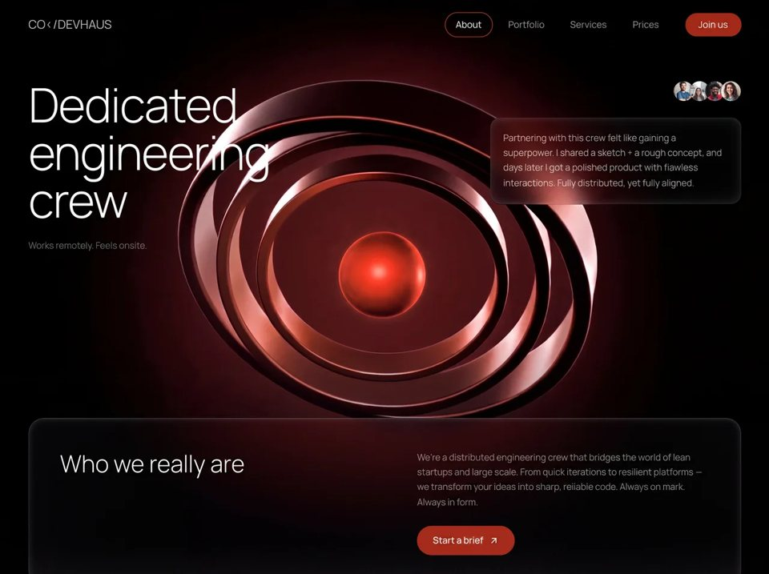

Build Unit
Agencyagencyyilai-ai 公开页面
收录时间：2026-08-14正文：10,084 字符

本地预览图 · jpeg
完整提示词
Recreate this exact full-viewport React + Vite + TypeScript + Tailwind hero page for “Breathstone” called “Measured”. Match every detail below precisely — assets, fonts, z-order, mouse morph-reveal trail, navbar, and mobile menu.
════════════════════════════════════
STACK
════════════════════════════════════
- Vite + React 18 + TypeScript
- Tailwind CSS 3
- No extra animation libraries
- Single-page app: only a fixed navbar + full-viewport hero (100vh). Page background: white (#ffffff). Global text color: #010101.
════════════════════════════════════
FONTS (exact)
════════════════════════════════════
1) Inter (UI / body / nav)
- Google Fonts: weights 300,400,500,600,700
- Applied globally via CSS: * { font-family: 'Inter', sans-serif; color: #010101; }
- Root wrapper also: fontFamily: 'Inter, sans-serif'
2) Instrument Serif (hero headline only)
- Google Fonts: Instrument Serif (normal + italic)
- HTML head:
<link href="https://fonts.googleapis.com/css2?family=Instrument+Serif:ital@0;1&display=swap" rel="stylesheet" />
- H1 style: fontFamily: "'Instrument Serif', serif"
3) Helvetica Neue Roman (hero section font class)
- Local @font-face from /fonts/HelveticaNeue-Roman.woff2 and .woff
- Class .font-helvetica-neue on the hero <section>
- Fallback: 'Helvetica Neue', Helvetica, Arial, sans-serif
- Note: headline overrides to Instrument Serif
════════════════════════════════════
IMAGE ASSETS (use these exact URLs)
════════════════════════════════════
All served via Higgs CDN proxy (webp, w=1280, q=85). Use EXACTLY:
BG_IMAGE (middle base layer, masked — trail punches holes to reveal BOTTOM):
https://images.higgs.ai/?default=1&output=webp&url=https%3A%2F%2Fd8j0ntlcm91z4.cloudfront.net%2Fuser_38xzZboKViGWJOttwIXH07lWA1P%2Fhf_20260803_132000_94a85ef5-2f7d-416c-bb6e-694b71474711.png&w=1280&q=85
FRONT_IMAGE (unmasked product/device overlay on top of headline):
https://images.higgs.ai/?default=1&output=webp&url=https%3A%2F%2Fd8j0ntlcm91z4.cloudfront.net%2Fuser_38xzZboKViGWJOttwIXH07lWA1P%2Fhf_20260803_140923_39a44bbe-5cc4-4c25-8692-a3be30d15453.png&w=1280&q=85
TOP_BACK_IMAGE (inverted mask trail — trail DRAWS this layer on top):
https://images.higgs.ai/?default=1&output=webp&url=https%3A%2F%2Fd8j0ntlcm91z4.cloudfront.net%2Fuser_38xzZboKViGWJOttwIXH07lWA1P%2Fhf_20260803_151004_6fd02352-004f-43d9-995b-2f0251bdff7d.png&w=1280&q=85
BOTTOM_IMAGE (deepest photo layer, revealed when BG is punched out):
https://images.higgs.ai/?default=1&output=webp&url=https%3A%2F%2Fd8j0ntlcm91z4.cloudfront.net%2Fuser_38xzZboKViGWJOttwIXH07lWA1P%2Fhf_20260803_200722_d93e38f8-cdc7-44ed-a1db-810e268cfedc.png&w=1280&q=85
Decoded CloudFront sources (same files):
- https://d8j0ntlcm91z4.cloudfront.net/user_38xzZboKViGWJOttwIXH07lWA1P/hf_20260803_132000_94a85ef5-2f7d-416c-bb6e-694b71474711.png
- https://d8j0ntlcm91z4.cloudfront.net/user_38xzZboKViGWJOttwIXH07lWA1P/hf_20260803_140923_39a44bbe-5cc4-4c25-8692-a3be30d15453.png
- https://d8j0ntlcm91z4.cloudfront.net/user_38xzZboKViGWJOttwIXH07lWA1P/hf_20260803_151004_6fd02352-004f-43d9-995b-2f0251bdff7d.png
- https://d8j0ntlcm91z4.cloudfront.net/user_38xzZboKViGWJOttwIXH07lWA1P/hf_20260803_200722_d93e38f8-cdc7-44ed-a1db-810e268cfedc.png
All images: object-cover / background-size cover, background-position center, full inset-0.
════════════════════════════════════
HERO LAYER STACK (bottom → top, exact z-index)
════════════════════════════════════
Section: relative, w-full, overflow-hidden, height: 100vh, class font-helvetica-neue.
z-0 — SVG technical grid overlay
z-1 — BOTTOM_IMAGE (CSS background-image, full bleed)
z-2 — MorphTrailLayer with BG_IMAGE, invert=false
(white full mask; trail uses destination-out to punch holes → reveals BOTTOM)
z-5 — Headline “MEASURED”
z-10 — FRONT_IMAGE (CSS background-image, unmasked, always visible)
z-20 — MorphTrailLayer with TOP_BACK_IMAGE, invert=true
(empty mask by default; trail paints white blobs with source-over → reveals TOP_BACK only along trail)
════════════════════════════════════
HEADLINE
════════════════════════════════════
- Text: “Measured” (rendered uppercase via CSS uppercase)
- Color: #010101
- Font: Instrument Serif
- line-height: 0.9
- Position: absolute, top-20 / sm:top-28 / md:top-32, left-0 right-0, centered, z-[5], px-4
- Responsive sizes:
- default: 4.5rem
- sm: 10rem
- md: 13rem
- lg: 16rem
- Sits BETWEEN the BG morph layer and the FRONT_IMAGE so the front product image overlays the word.
════════════════════════════════════
SVG GRID (parallax)
════════════════════════════════════
- Full-bleed absolute SVG, opacity 0.1, pointer-events-none, z-0
- Pattern cell: 48×48 (GRID_CELL = 48)
- Path: `M 48 0 L 0 0 0 48`, stroke #64748b, strokeWidth 0.6, fill none
- Mouse parallax: track window mousemove; normalize to section (-0.5..0.5); lerp grid offset toward (cx*16, cy*16) with factor 0.06 each frame via rAF. Pattern x/y = gridOffset.
════════════════════════════════════
MOUSE MORPH-REVEAL TRAIL (core interaction — implement exactly)
════════════════════════════════════
Constants:
- TRAIL_MAX_POINTS = 60
- TRAIL_HEAD_R = 70
- TRAIL_NOISE_AMP = 22
- TRAIL_BLOB_PTS = 24
- TRAIL_FADE_SPEED = 0.92
- TRAIL_SAMPLE_DIST = 8
Each MorphTrailLayer owns:
- Hidden offscreen canvas (display:none) sized to container
- Visible absolute inset-0 div containing <img object-cover> of the layer image
- Mask applied every frame via:
maskEl.style.webkitMaskImage = `url(${canvas.toDataURL()})`
maskEl.style.maskImage = `url(${canvas.toDataURL()})`
maskSize / webkitMaskSize = '100% 100%'
Mouse: listen on hero section mousemove/enter/leave; coords relative to section rect.
Per-frame head radius lerp:
- targetR = hovering ? 70 : 0
- headRadius += (targetR - headRadius) * (hovering ? 0.14 : 0.04)
Trail sampling: when hovering and headRadius > 5, if distance from last sample > 8px, push point {x,y,r:headRadius,alpha:1,seed:random*100}. Cap at 60 points (shift oldest).
Trail decay each frame: alpha *= 0.92; r *= 0.995; remove if alpha < 0.01.
time += 0.016 each frame.
drawMorphBlob(ctx, cx, cy, r, t, seed):
- Skip if r < 2
- 24 points around circle; for each angle i:
n1 = sin(angle*3 + t*1.4 + seed) * 0.45
n2 = sin(angle*5 - t*0.9 + seed*2.3) * 0.3
n3 = cos(angle*2 + t*1.8 + seed*0.7) * 0.25
noise = (n1+n2+n3) * 22 * (r/70)
point at radius r+noise
- Closed smooth path via midpoints + quadraticCurveTo (organic blob, not circle)
Canvas draw modes:
A) invert=false (BG_IMAGE layer):
- Fill canvas white
- composite = destination-out
- Draw trail blobs (alpha = point.alpha, radius = r*alpha) then head blob
→ holes in white mask hide BG_IMAGE and reveal BOTTOM underneath
B) invert=true (TOP_BACK_IMAGE layer):
- Start clear (no white fill)
- composite = source-over
- Draw same blobs in white
→ only trail regions show TOP_BACK_IMAGE above FRONT_IMAGE
Visual result: moving the mouse leaves a morphing organic “wipe” that simultaneously reveals a deeper photo under the mid layer AND paints a top photo over the front device image along the same trail, with soft fading morphing blobs.
════════════════════════════════════
NAVBAR (fixed, z-50)
════════════════════════════════════
Layout: fixed top-0 left-0 right-0, flex justify-between items-center, px-5 sm:px-8, py-4 sm:py-5.
LEFT — Logo SVG 28×28, viewBox 0 0 256 256, fill #010101, path:
M 256 64 L 256 128 L 192.5 128 L 160 95 L 128 64 L 96 95 L 63.5 128 L 64 128 L 128 192 L 128 256 L 64.5 256 L 32 223 L 0 192 L 0 64 L 64 0 L 192 0 Z M 256 192 L 256 256 L 192.5 256 L 160 223 L 128 192 L 128 128 L 192 128 Z
CENTER (md+ only) — Pill nav, fixed at top: 1.25rem, left: 50%, translateX(-50%)
- Items: Device | Real Stories | Science | Plans | Reach Us
- Container: rounded-full, px-2 py-1.5, gap-1, transparent bg, 1px solid #DDD5CA
- Each item: button, text-sm font-medium, text #010101 at 70% opacity, hover full #010101, px-4 py-1.5 rounded-full
RIGHT (md+ only) — CTA “Reserve Yours”
- rounded-full, px-5 py-2, text-sm font-medium, text #010101
- transparent bg, 1px solid #DDD5CA, hover brightness-110
MOBILE (<md) — hamburger replacing CTA
- rounded-full p-2.5, border 1px #DDD5CA, transparent
- Two black bars: top w-5 h-[1.5px], bottom w-3.5 h-[1.5px], stacked in w-5 h-4
NO liquid glass / blur / frosted glass. Stroke only: #DDD5CA.
════════════════════════════════════
MOBILE FULLSCREEN MENU
════════════════════════════════════
- fixed inset-0, z-[55], md:hidden, bg #f5f5f5
- Open/close: opacity + pointer-events, duration 500ms, easing cubic-bezier(0.77,0,0.18,1)
- Lock body overflow when open
- Close button top-right: X made of two rotated 1.5px black lines; border #DDD5CA pill; animates rotate/scale/opacity with 200ms delay on open
- Nav items centered vertically: text-3xl sm:text-4xl font-medium, #010101/90, stagger:
open delay = 100 + i*60 ms; close delay = (n-i)*30 ms; translateY 24→0 + opacity
- “Reserve Yours” below list: rounded-full px-8 py-4 text-base, border #DDD5CA, same stagger after last item
════════════════════════════════════
COLORS
════════════════════════════════════
- Page bg: #ffffff
- Mobile menu bg: #f5f5f5
- Text: #010101 (and /70, /90 variants)
- Stroke / borders: #DDD5CA
- Grid stroke: #64748b @ 10% layer opacity
- Logo fill: #010101
════════════════════════════════════
BEHAVIOR SUMMARY
════════════════════════════════════
On load: show FRONT_IMAGE device photo over a soft BG photo, with giant Instrument Serif “MEASURED” partially behind the device, subtle slate grid, and a minimal top nav with #DDD5CA stroked pills.
On mouse move over the hero: organic morphing blobs follow the cursor, punching through the mid photo to a deeper scene while simultaneously painting a top photo along the same trail above the device — fading trail of up to 60 morphing blobs with organic noise deformation.把上面的提示词完整复制到支持长文本的 AI 工具中，再按需要替换品牌名、配色与文案。提示词描述的是整页结构与动效节奏，生成后建议在真实浏览器里检查首屏加载和移动端表现。
来源与版权
该条目来自公开提示词页面，原始出处信息未随页面提供。
提示词文本与预览素材的版权归原作者或原平台所有，本站仅作索引与归档。若你是权利人并希望移除本条内容，请通过联系方式告知。